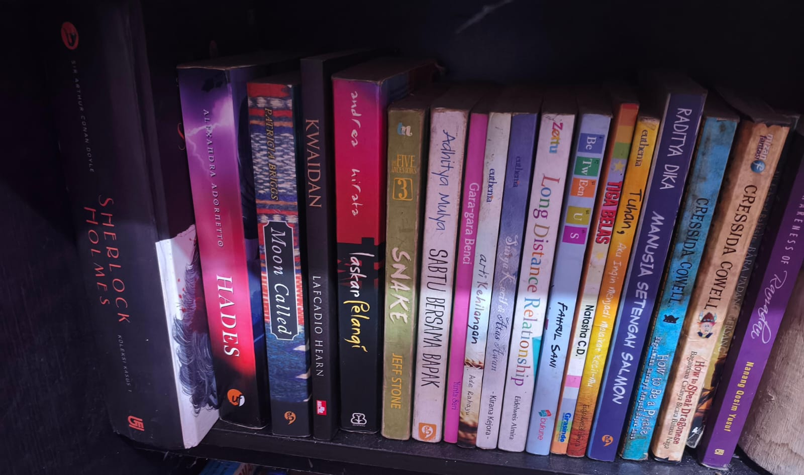
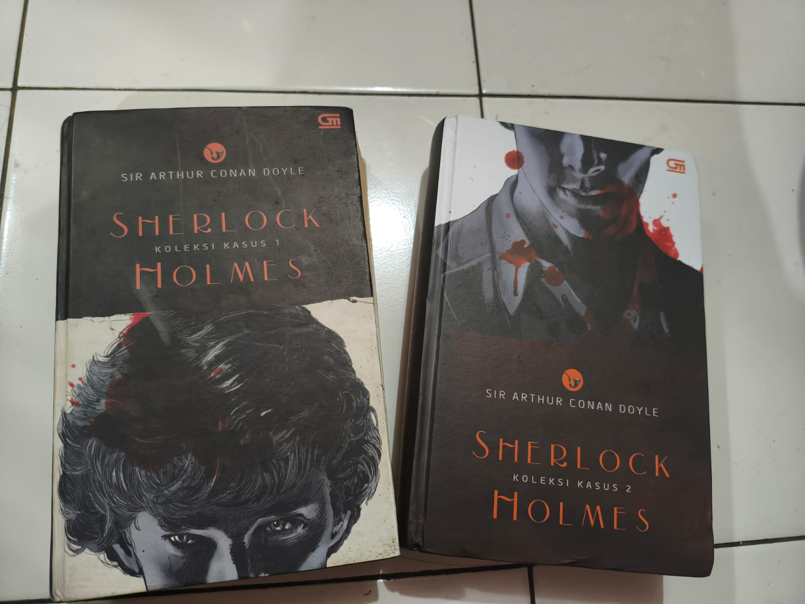
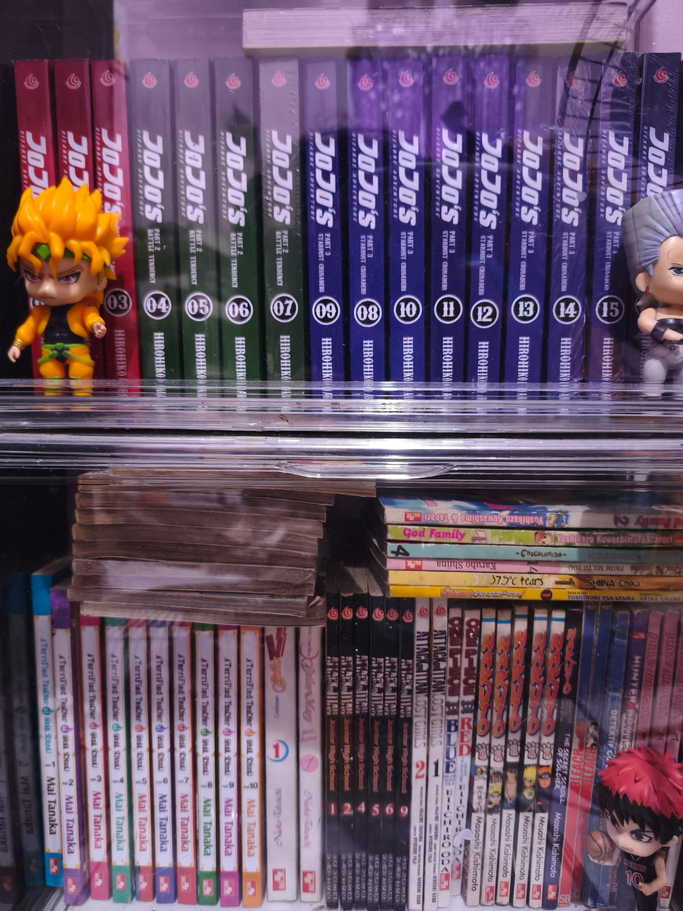

HOBI SAYA
Membaca
Salah satu hobi saya yaitu membaca novel dan komik. Melalui hobi tersebut, saya dapat mengisi waktu luang dengan kegiatan yang bermanfaat sekaligus menambah wawasan. Saya senang membaca berbagai genre novel dan komik karena cerita yang menarik dapat meningkatkan imajinasi, kreativitas, serta kemampuan memahami alur cerita dan karakter. Selain sebagai hiburan, hobi ini juga membantu saya mengurangi stres dan memperluas pengetahuan tentang berbagai hal.
Jenis bacaan yang saya sukai yaitu novel dan komik.
Membaca novel

Saya memiliki hobi membaca novel, terutama novel bergenre detektif dan fantasi. Saya menyukai cerita detektif seperti Sherlock Holmes karena alur misterinya yang menarik dan menantang pembaca untuk ikut memecahkan kasus. Selain itu, saya juga menyukai novel fantasi seperti How to Train Your Dragon karena menghadirkan petualangan yang seru, dunia yang unik.
Membaca Komik

Saya juga memiliki hobi membaca komik, terutama komik bergenre petualangan dan misteri. Salah satu komik favorit saya adalah Detektif Conan karena menghadirkan berbagai kasus yang menarik dan penuh teka-teki. Selain itu, saya juga menyukai JoJo's Bizarre Adventure karena memiliki cerita yang unik, karakter yang beragam, serta pertarungan yang kreatif. Membaca komik menjadi salah satu cara bagi saya untuk mengisi waktu luang sekaligus menikmati cerita yang seru dan menghibur.
“Sedikit demi sedikit, pengetahuan dapat bertambah melalui kebiasaan membaca.”